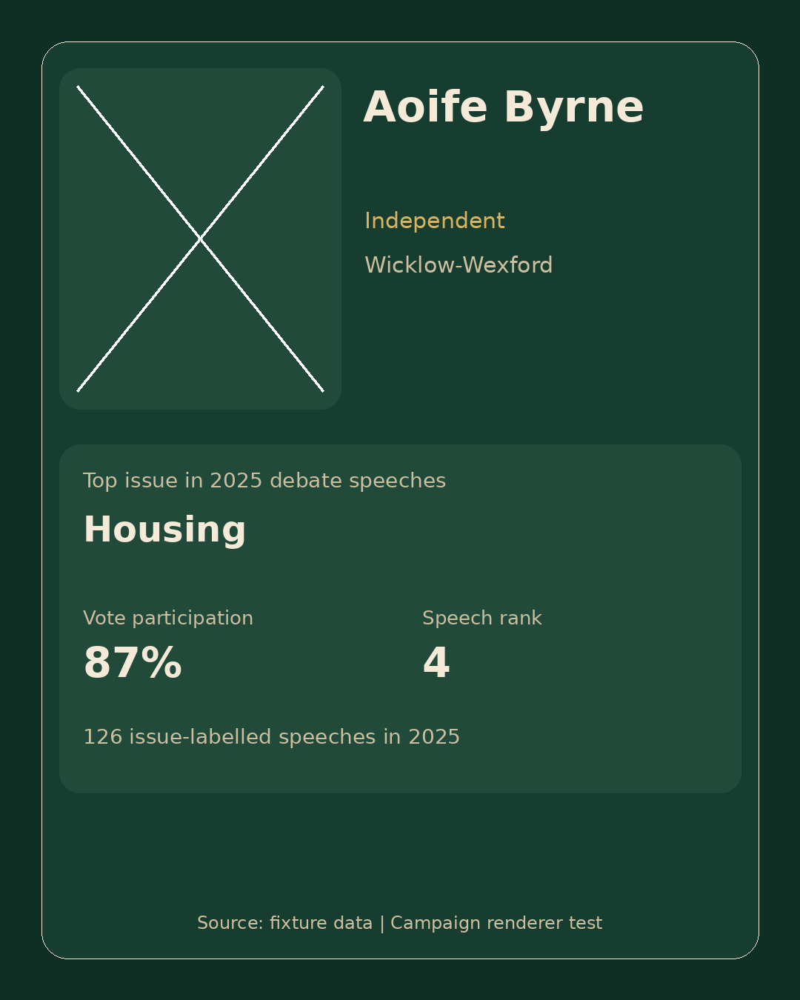
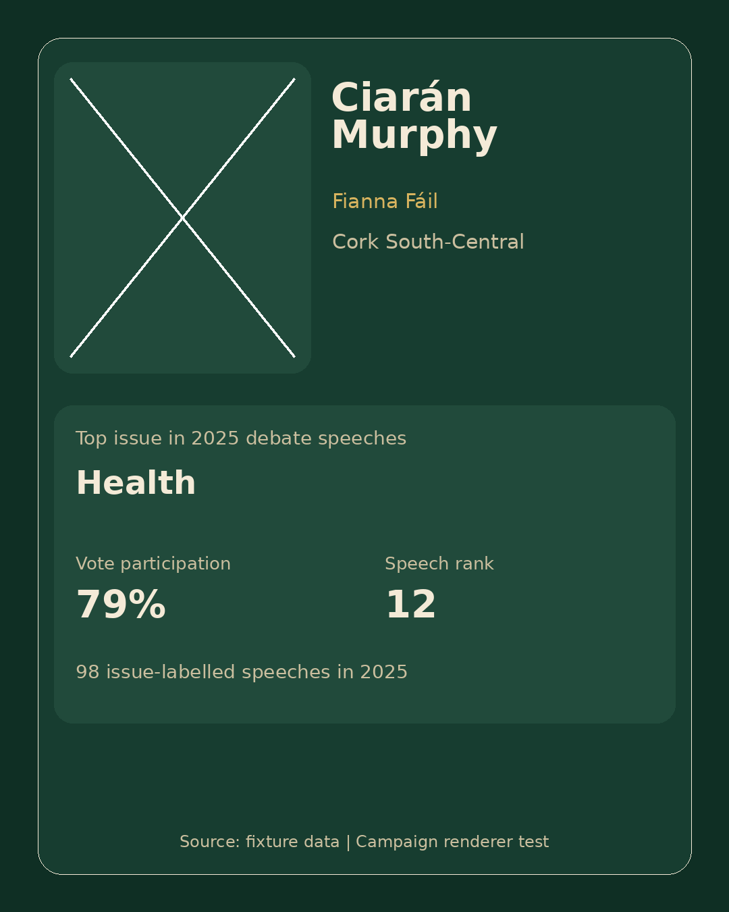
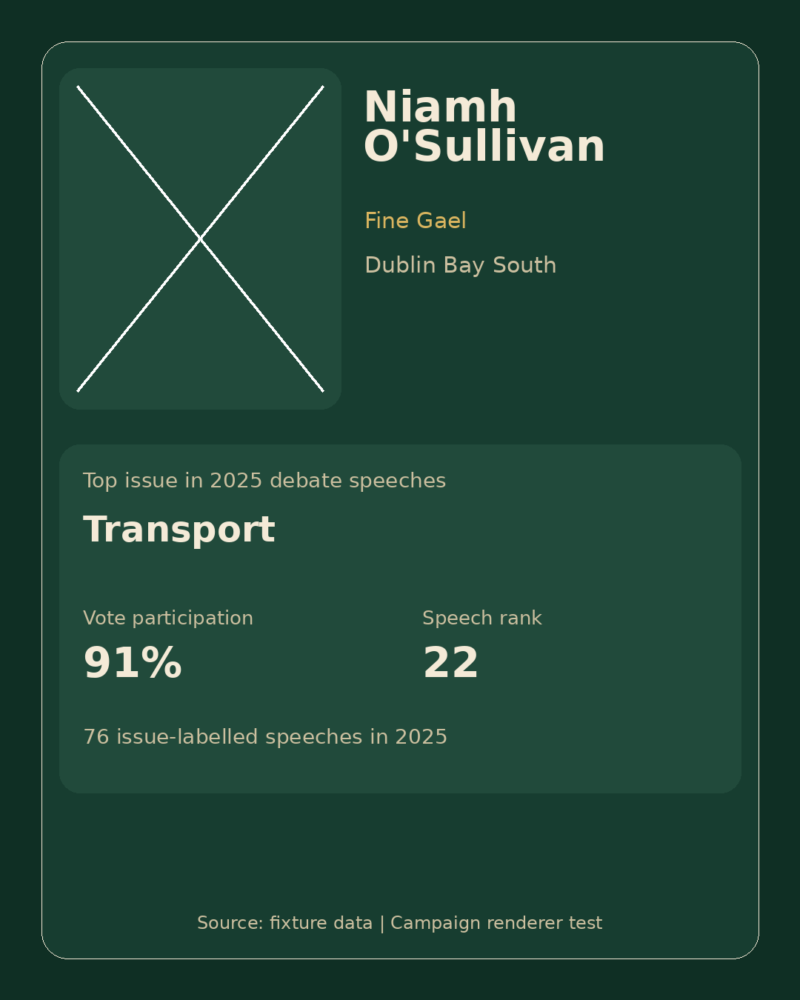

Member Profile Batch v1 Review
Use this page for human review only. Set publish status in review_table.csv after checking every item.
Aoife Byrne
Independent · Wicklow-Wexford

- Top issue
- Housing
- Vote participation
- 87%
- Speech rank
- 4
- Speech count
- 126
- Warnings
- missing_image_reference
- Bindings
metadata/bindings/aoife-byrne.yml- Render manifest
metadata/manifests/aoife-byrne.render_manifest.json
Review status: needs_review · Publish ready: no
Ciarán Murphy
Fianna Fáil · Cork South-Central

- Top issue
- Health
- Vote participation
- 79%
- Speech rank
- 12
- Speech count
- 98
- Warnings
- missing_image_reference
- Bindings
metadata/bindings/ciar-n-murphy.yml- Render manifest
metadata/manifests/ciar-n-murphy.render_manifest.json
Review status: needs_review · Publish ready: no
Niamh O'Sullivan
Fine Gael · Dublin Bay South

- Top issue
- Transport
- Vote participation
- 91%
- Speech rank
- 22
- Speech count
- 76
- Warnings
- missing_image_reference
- Bindings
metadata/bindings/niamh-o-sullivan.yml- Render manifest
metadata/manifests/niamh-o-sullivan.render_manifest.json
Review status: needs_review · Publish ready: no